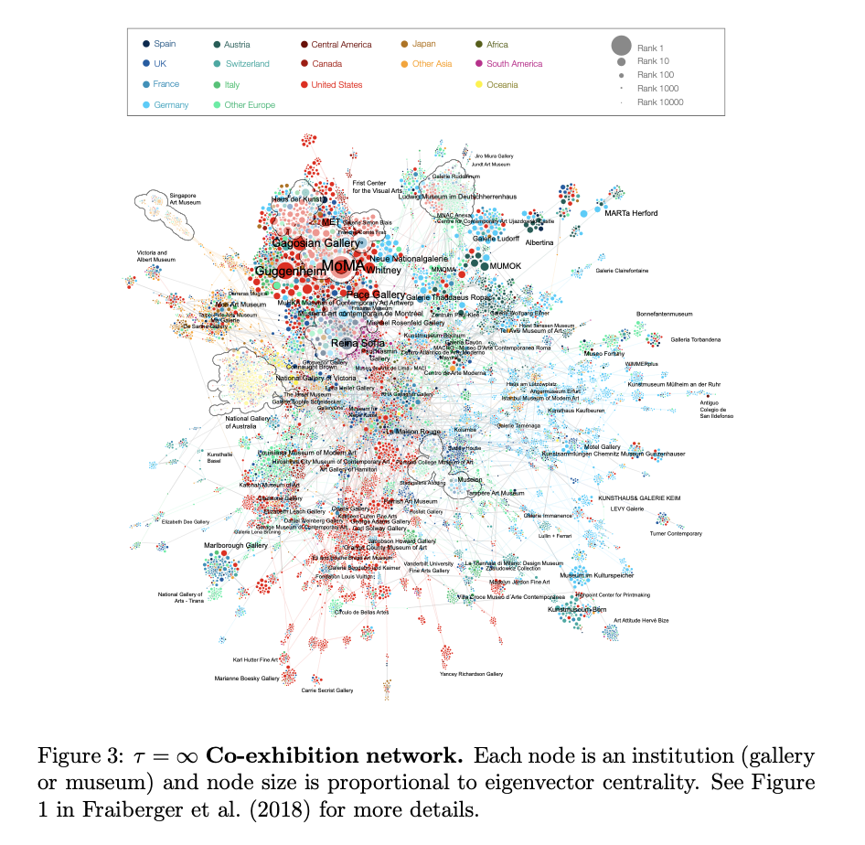

Where you debut probably decides where you stay
A 2018 paper from Albert-László Barabási’s group (Fraiberger, Sinatra and colleagues) maps the global art world as a single network. Barabási is the network scientist who introduced scale-free networks two decades ago and runs labs at Northeastern and Harvard; his book The Formula: The Universal Laws of Success is the readable distillation of this whole research line. If any of what follows surprises you, pick it up.
The team tracked 496,354 artists across 16,002 galleries and 7,568 museums between 1980 and 2016, drawing an edge between any two institutions whenever an artist exhibited at one and then at the other. The result is a dense Western core (MoMA, MET, Guggenheim, Tate, Pompidou) with a ring of regional clusters around it: Japanese, Brazilian, Australian, Eastern European. The links between those clusters and the core are thin.

What an artist’s first five shows predict
The authors then take only the first five exhibitions of each artist and use them to predict the next thirty. A model that respects those five does it accurately. A memoryless model fails.
Curators choose new artists by looking at the curators who chose them before. The first tier you land in becomes the reference set that does most of the later picking for you.
What this means outside the gallery world
The same shape probably reproduces in any career path that flows through institutions and gatekeepers. First lab. First publication. First conference. First podcast. Each has a core and a periphery, and the gap between them takes time to cross.
If you can afford to be patient about exactly one career choice, make it the first one.